VER
VER
El neerlandés más rápido de la historia. Hijo del expiloto Jos Verstappen, debutó en F1 con 17 años y se convirtió en el campeón más joven de la era híbrida. Su agresividad y ritmo en mojado son únicos.
 HAM
HAM
El piloto más laureado de todos los tiempos. Criado en Stevenage, llegó a la F1 en 2007 y desde entonces no ha parado de romper récords. En 2025 da el salto a Ferrari buscando su octavo título.
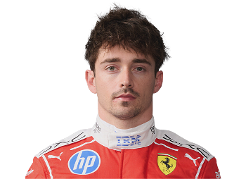
LECEl monegasco de Ferrari. Conocido por sus impresionantes poles en clasificación, especialmente en circuitos urbanos. Perdió el título 2022 por errores estratégicos del equipo cuando lideraba el campeonato.
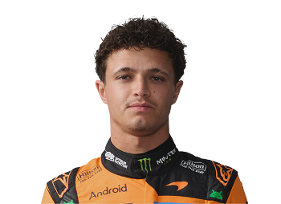
NOREl niño prodigio del paddock ya es una estrella de verdad. Llegó a McLaren en 2019 y desde 2023 lidera la resurrección del equipo papaya. Streamer habitual y uno de los pilotos más queridos por los fans.
 SAI
SAI
Hijo del mítico rally Carlos Sainz. Llegó a F1 con el apellido más pesado del motorsport español y lo ha transformado en orgullo propio. Tras 4 años en Ferrari, se une a Williams para demostrar su clase en 2025.
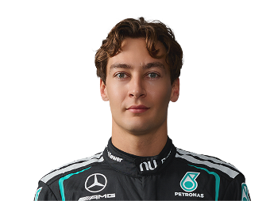
RUSLlamado "Mr. Saturday" por sus brillantes clasificaciones, Russell llegó a Mercedes en 2022 tras dominar Williams. Inteligente, metódico y representante activo de la GPDA, es el futuro del equipo de la estrella.
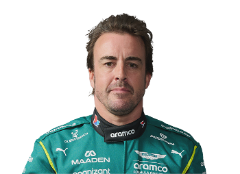
ALOLa leyenda viva de la Fórmula 1. A sus más de 40 años sigue siendo uno de los pilotos más completos de la parrilla. Ha ganado Le Mans, las 500 Millas de Indianápolis y ahora apunta a su tercer título mundial.
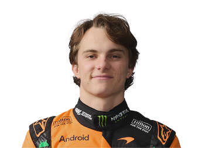
PIAEl australiano más prometedor de la F1 moderna. Campeón en F3 y F2 en años consecutivos, llegó a McLaren en 2023 tras el polémico caso Alpine. Frío, preciso y devastador cuando el coche responde.
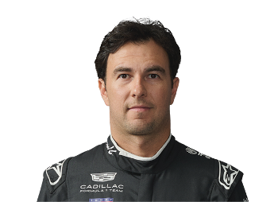
PEREl orgullo nacional de México en la F1. Conocido por su extraordinaria gestión de neumáticos y su capacidad en calles. Sobrevivió años en equipos medianos antes de llegar a Red Bull y convertirse en doble subcampeón.
 STR
STR
Hijo del multimillonario Lawrence Stroll, propietario de Aston Martin. Más allá del debate sobre su llegada, Lance ha demostrado tener talento real en circuitos callejeros y bajo la lluvia. Piloto en mejora constante.
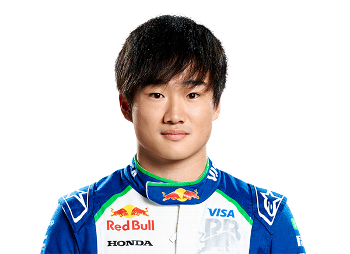
TSUEl japonés más rápido de la parrilla. Famoso por sus mensajes de radio explosivos y su pilotaje agresivo. A pesar de su estatura, tiene uno de los perfiles más grandes del paddock en redes sociales. Crece año tras año.
 OCO
OCO
Criado con pocos recursos, Ocon llegó a la F1 gracias a Mercedes y su talento bruto. Conocido por su rivalidad con Pérez en Force India y con Alonso en Alpine. Llega a Haas en 2025 buscando un nuevo comienzo.
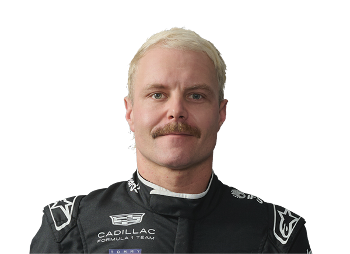
BOTEl finlandés filosófico de la parrilla. Pasó 5 años como compañero de Hamilton en Mercedes, logrando 10 victorias pero siempre a la sombra. Hoy es el alma de Kick Sauber y un icono de la cultura popular del paddock.
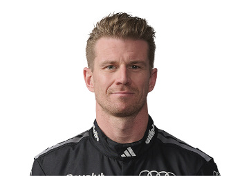
HULApodado "El Hulk", es el piloto con más Grandes Premios disputados sin un podio en la historia de la F1. Ganó Le Mans en 2015 y es uno de los pilotos con mejor ritmo de un solo intento. Su vuelta al grid en 2023 fue épica.
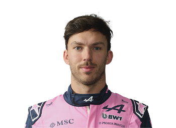
GASLa historia de resiliencia más bonita del paddock. Degradado de Red Bull en 2019, transformó ese golpe en motivación y ganó en Monza 2020 con AlphaTauri. En 2023 se unió a Alpine buscando dar el siguiente salto.
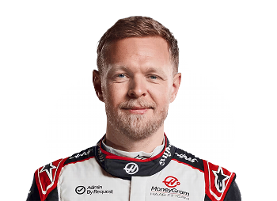
MAGHijo del expiloto Jan Magnussen. Feroz en las batallas cuerpo a cuerpo y sin miedo a nadie en la pista. Volvió a la F1 en 2022 tras una llamada de emergencia de Haas y logró pole position en su GP de regreso en Brasil.
 ALB
ALB
Tailandés-británico y orgullo de dos países. Tuvo un paso irregular por Red Bull y fue relegado, pero volvió como líder de Williams en 2022. Considerado uno de los mejores a la hora de sacar el máximo a un coche difícil.